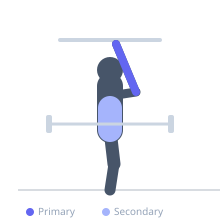
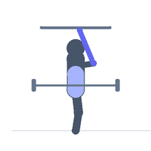

Exercise guide / Barbell Dead Hang
Barbell Dead Hang
The barbell dead hang involves gripping a loaded barbell in the rack or on the floor from a standing position and holding it for time. Unlike a pull-up bar hang, the arms remain straight and the body stands, loading the grip and forearm flexors isometrically with heavy weights. It directly trains the grip strength needed for deadlifts and other heavy pulling movements. It is typically performed with deadlift-level loads at the end of a training session.
Primary muscles
flexor carpi radialis
flexor carpi ulnaris
Secondary muscles
erector spinae
Equipment
Standard Barbell


Starting position
- Load a barbell at hip height in a rack. Stand and grasp the bar with a double overhand grip, shoulder-width.
Setup
- Set the bar at deadlift height. Use loads at or above your deadlift working weight for grip training specificity.
Steps
- Step 1: Grip the barbell with a double overhand grip.
- Step 2: Lift the bar off the pins or take it from the floor.
- Step 3: Hold it in a standing position with arms fully extended for the prescribed duration.
- Step 4: Set the bar down when grip is about to fail.
Coaching cues
- Grip hard throughout
- Shoulders packed down
- Control when you set it down
Breathing
- Breathe freely throughout the hold.
Range of motion
- Static hold — no movement.
Tempo
- Hold for 10-30 seconds
Common mistakes
- Using straps (negates the grip training purpose)
- Holding past the point of technique breakdown
Safety
- Ensure the bar is secured and the hold is performed over a rubber-matted platform
Training
- strength: 3–5 reps
- strength: 3–5 sets
- Rest: {'strength': 180}